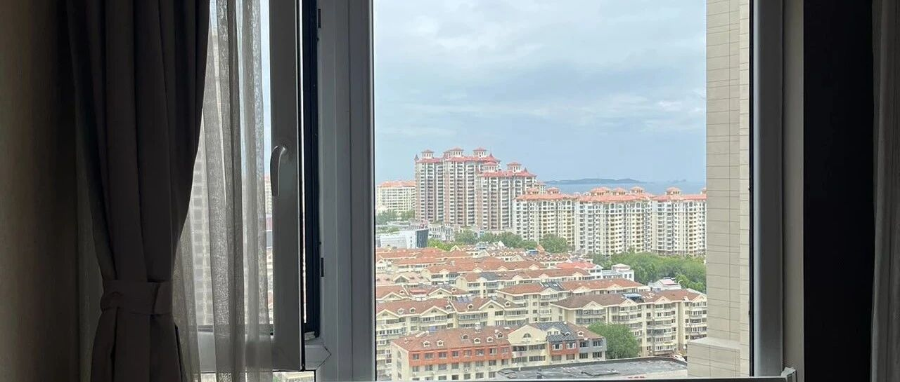

要去北京看病了
点击关注 秋秋在分享
一起实现财务自由退休
大家好，我是秋秋呀。
前两天我婆婆不舒服去医院，检查出肺部有点问题，我们接下来要去北京复查一下。
应该没啥大事。
她们也觉得没事，有新农合，年轻的时候也都买了保险，拿出来给我看了一下。
妈呀，花10万块钱，买了寿险！

寿险，就是人死了才会赔钱。像你看病，门诊住院这些都是不赔钱的。
一般咱们说的保险，有居民医保，能报销70%左右治疗费用。
自己补充的百万医疗险一年几百块，能报销剩下的治疗部分。
而重疾险是只要符合大病，一次赔给你几十万那种，不管你治疗多少都给钱。
他们也不懂，以为寿险生病也给钱，老了还能把本金都返回了，觉得挺好。

他们买的这种属于返还型保险，一年交一万，返的钱等65岁才能领。
也就是，20年之后才返回你十万本钱。
我觉得真不如存银行。
十几年前，每年交1万，银行利率还有4%，10年定存到手就有13.49万。
这13.49万，还要再等十年才能领，每年再4%利息，相当于最后有快20万。

他们1万块本金的利息，估计都够了。
像我之前赚钱多，怕死，就给自己买了350万保额的寿险，一年也才1000多块钱。
而如果不是家里赚钱的主力军，说实在寿险都没必要买。买个100块钱的意外险，死亡也都赔付，撬动杠杆更大。
他们算下来，相当每年快1万买了个寿险。
我就真是气笑了。
不过孝顺，讲究的就是不忤逆老人。我也只能安慰，还还有点用的，最起码钱没乱花。
如果老人不会理财，放这里保本也没问题。
然后我就把自己父母那一套百万医疗、意外险也都给公婆安排上了。
我给父母买的早，那时候他们身体好，就便宜，现在我婆婆身体出点问题，买的就贵点。
也就是图个安心。
除了新农合，老年人安排个百万医疗和意外险，一个报销医保外费用，一个报销摔伤啥的，就很齐全了。
写出来也是给大家提个醒，看看父母有没有买这种返还型保险。
毕竟不生病他们还把我们当小孩，是不会主动说的。
另外，虽然对象父母“被忽悠”，却也是提前规划了。
他们还给我对象买了「幸福一生】，60岁时还能领8万块。

也是被父母的爱感动到了，我也给儿子安排上了。
一是弄了个吃股息的账户，到他大了给他。
二是我一次性缴费，给他买了个保终身的重疾险，把保障做足了。
有时候提前规划是好的，也就是这种责任才能让爱传承吧。